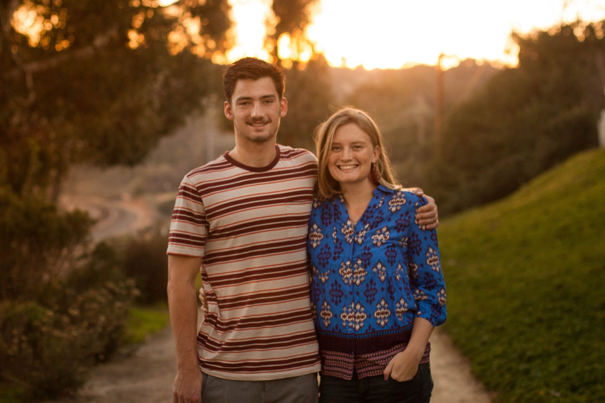

I grew up in San Diego and spent over a decade exploring its coastline for the best spots. I love how many great spots there are for creating cute family holiday cards and unique engagement photos. Managing the crowds in the more famous spots can definitely be a challenge, so it helps to have flexibility on timing if you are interested in places like Balboa Park or Sunset Cliffs. Otherwise, many of the beach spots are relatively easy to navigate!
Sunset Cliffs
If you want dramatic ocean vistas with incredible light, Sunset Cliffs is definitely the location for you. I absolutely love shooting here, but the crowds are always difficult so I don't recommend weekends. Sunset is, of course, the best time to take advantage of the great light, but sunrise can be a nice option as well to beat the crowds! This location can work for families as well, but not those with young children, as the terrain can be treacherous.

Balboa Park
Historic Balboa Park is an incredible location for everything from headshots to couples to families. There are so many beautiful spots for architectural drama and lush greenery, especially around the holidays with their decorations. The koi pond in the center of the park is especially cute for candids with kids. The biggest downside of Balboa Park is the crowds, so I ask clients to avoid the location on weekends unless early morning is an option.


Torrey Pines
Torrey Pines is a famous hiking trail in San Diego with a great beach for photos! I love doing family photos here especially, since there are lifeguard towers that make for great climbing structures and candids. The light is best here at sunrise or sunset, but can be great all day if it's cloudy of course. Parking can be tricky here on weekends because there are limited spots near the beach so it's good to factor in extra time or pay for parking.


La Jolla Shores
Another great San Diego beach, with the bonus of a famously photogenic pier! La Jolla shores is equally wonderful for family, couples, or maternity photos, as it is very accessible and relatively easy to park nearby. It's best to avoid weekend sunsets if possible. I've had some nice success here on sunrises, especially on cloudy days. Just past the pier is Black's Beach, which is a great alternative for anyone wiling to walk a bit further to avoid crowds.


Rose Canyon
Rose Canyon is an expansive trail network in University City that runs behind my childhood home! I grew up exploring the canyon and I love any excuse to return with my camera (please enjoy this photo of my brother and me from way back in 2014!). If you love golden hour fields like me, Rose Canyon is a great option. Works best right at sunset, especially in winter months. Definitely kid and dog friendly, but the canyon has some uneven terrain.
Eucalyptus Grove
UC San Diego's campus has a large grove of eucalyptus trees and trails that overlook La Jolla. I love this location for families because you can go a little earlier than sunset and still catch some lovely golden light through the branches. There's often a cute "secret" swing too, which makes for some adorable photos. Some couples or families pair this location with La Jolla shores, which is just five minutes down the hill.